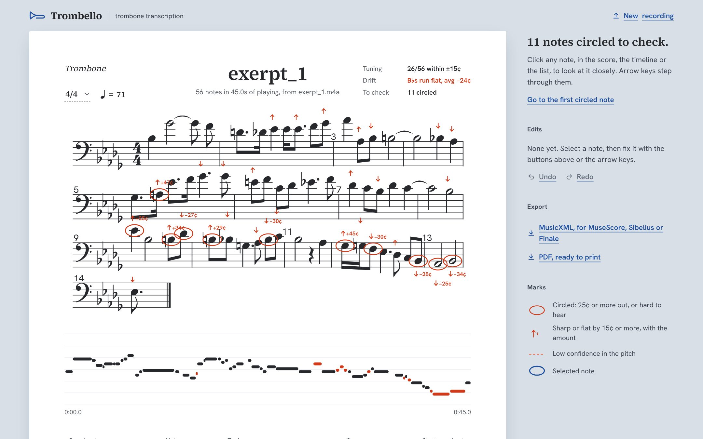

Software Engineering
& Data
Computer Science graduate and Assistant Data Manager with experience building software, working with data, and developing practical systems using Python, Java, and SQL.
Software & Data

Software & Data Engineering
I’m a Computer Science graduate from Nottingham Trent University, where I achieved a 2:1 BSc Computer Science in 2025. My experience spans data management, cleansing and modelling, dashboard development, software engineering, and cloud-connected applications.
Selected Work
A selection of software and data projects developed through university, personal work, and practical experience. Click a project to read the full technical write-up.
Trombello - Trombone Transcription
A web app that turns a trombone recording into editable sheet music, with
per-note intonation feedback and MusicXML/PDF export. Currently in development.
Python
FastAPI
React
TypeScript
music21

Overview
A transcription tool built for one instrument. Upload a recording (often made on a phone) and Trombello returns notes, rhythm, key and notation, shown as a score in the browser alongside a piano roll. Every note carries its tuning in cents, so students, players and teachers can see exactly where intonation drifted, then export to MuseScore or Sibelius via MusicXML, or print as PDF.
Architecture & Tech Stack
A FastAPI backend runs the transcription pipeline as background jobs with progress reporting; a React + TypeScript (Vite) frontend renders the score with OpenSheetMusicDisplay. Scores are built with music21 and engraved to PDF with Verovio. Optional Demucs source separation isolates the trombone from a backing track.
Key Technical Highlights
- Implemented pitch detection with the YIN algorithm in pure NumPy, then grouped the frame-by-frame pitch track into discrete notes while handling trombone-specific behaviour: slide movement, glissandi, tongued attacks, vibrato and pedal tones.
- Built tempo estimation and rhythm quantisation that snaps notes onto a musical grid (including triplets) and inserts rests, producing a real, readable score rather than a raw note list.
- Created a golden dataset of real trombone recordings paired with ground-truth scores and an evaluation harness that scores the exact pipeline the app runs, so every change is measured, not guessed.
- Designed an in-browser review flow: uncertain or out-of-tune notes are circled, and users can step through, correct and re-engrave notes with undo/redo.
What's Next
Accuracy is strongest on exercises and weaker on fast slurred passages in real pieces, which the dataset makes easy to track. Next on the roadmap: synced playback in the note editor, better handling of backing tracks, and a public beta with accounts and deployment. The source isn't on GitHub yet while it's in active development.
RoomSync - Dorm Room Booking System
A distributed booking system for student accommodation with a RESTful Java backend
and a separate console client, integrating third-party routing and weather APIs.
Java
REST APIs
Tomcat
Overview
A two-tier system for browsing and applying for student accommodation, built to practice proper client-server separation rather than a single monolithic app. The backend is a Java EE RESTful web service; the client is an entirely separate Java console application that only ever talks to the backend over HTTP.
Architecture & Tech Stack
Java EE / JAX-RS (Jersey) backend deployed as a servlet-
container web app, consumed by a standalone Java console
client over HttpURLConnection, with Gson for
serialization on both sides. Integrates two third-party
public APIs: OSRM for driving-distance calculation and
7Timer! for weather forecasts.
Key Technical Highlights
-
Designed a REST API with resources for rooms,
applications, distance, and weather — each a separate
JAX-RS
@Pathclass registered through a centralApplicationConfig. - Integrated two third-party public APIs server-side: parsing OSRM's GeoJSON route response to extract distance, and deserializing 7Timer's nested weather payload into typed Java objects.
-
Implemented server-side availability logic using
java.time.LocalDatecomparisons rather than trusting client-supplied flags. - Built the client as a fully independent consumer of the API — its own DTOs, its own HTTP handling — to practice designing a backend for consumers you don't control.
What I'd Improve
The file-backed JSON persistence works but isn't concurrency-safe, the application writes use manual string manipulation to keep a JSON array valid across appends. A real database (even SQLite) would remove that fragility entirely. I'd also extract the hardcoded file paths into configuration and share DTOs between client and server via a common module instead of duplicating them.
SoundWave
A social platform for musicians with a Firestore-backed follow/unfollow graph using atomic transactions
to keep bidirectional relationships and counts consistent.
Android
Java
Firebase
Figma
Overview
My final year university project — a social media app connecting musicians through shared instruments, genres, and interests, with a content feed, profile discovery, and a full follow/unfollow social graph.Designed and built end-to-end with the UI prototyped in Figma.
Architecture & Tech Stack
Android (Java) with a Firebase/Firestore backend. The standout piece is a bidirectional follow relationship with denormalized counters, kept consistent via Firestore transactions.
Key Technical Highlights
-
Implemented follow/unfollow using a Firestore
transaction that reads both users' documents,
then atomically updates
following/followersarrays (viaarrayUnion/arrayRemove) and denormalizedfollowingCount/followersCountfields (viaincrement) on both sides in a single atomic operation — the correct pattern for keeping a bidirectional relationship and its counters consistent under concurrent writes. - Built a content feed, profile discovery, search, and full profile editing (instruments, genres, bio, location) on a shared Firestore schema.
- Designed the user profile schema with tagged fields (instruments and genres as list types) specifically to support future similarity-based matching.
What I'd Improve
Discovery currently selects a musician at random from the full user base (with simple repeat-avoidance) rather than ranking by shared interests — a natural next step given the schema already captures instruments and genres. I'd also replace the full-collection fetch on each discovery request with paginated queries as the user base grows.
InstrumentIQ - AI Music Chatbot
A multi-modal assistant for brass instrument questions,
combining a tuned CNN image classifier,
symbolic knowledge-base reasoning, and voice interaction.
Python
NLP
AI
Overview
A conversational assistant for brass/woodwind instrument questions that routes between five distinct AI techniques depending on the type of input it receives - image, greeting, factual assertion, factual query, or open question, rather than relying on a single model.
Architecture & Tech Stack
A CNN (Keras/TensorFlow) for image classification, with its architecture selected via automated hyperparameter search (Keras Tuner's Hyperband algorithm); an AIML pattern-matching kernel for conversational small talk; TF-IDF with cosine similarity for retrieval-based Q&A; a symbolic subject-predicate-object knowledge base with fuzzy-matched contradiction checking; and speech-to-text / text-to-speech for voice interaction.
Key Technical Highlights
- Trained a CNN for binary brass-vs-woodwind image classification, with the network architecture found through Hyperband search rather than manually tuned.
- Built a symbolic knowledge base that persists new facts back to disk across sessions, with contradiction detection using fuzzy string matching so near-equivalent phrasings are still recognized correctly.
- Designed a rule-based orchestration layer that inspects each user input and routes it to the appropriate subsystem — image classifier, AIML kernel, KB writer, KB checker, or TF-IDF retrieval — making the system's reasoning explainable rather than a black box.
- Integrated five materially different AI/NLP techniques into one coherent interaction loop, including optional voice input/output.
What I'd Improve
The knowledge base and Q&A datasets are intentionally small, built to demonstrate each technique working correctly rather than to scale to a production knowledge base. I'd also look at replacing the manual keyword-based input router with a lightweight intent classifier, so routing decisions are learned rather than hardcoded.
TenantTrack - Property Management App
A property management app for landlords with Firebase Auth
(including Google Sign-In) and per-user data isolation.
Android
Java
Firebase
Overview
An Android app for landlords to list, update, and track rental properties — tenant details, rent and deposit amounts, tenancy dates, and property photos — scoped per-user so each landlord only sees their own portfolio.
Architecture & Tech Stack
Android (Java) with Firebase Authentication (email/password plus Google Sign-In federation via OAuth token exchange) and Firestore for property records.
Key Technical Highlights
-
Implemented proper federated authentication: Google
Sign-In returns an ID token, exchanged for a Firebase
credential via
GoogleAuthProvider, giving users a one-tap login alongside standard email/password. - Every property record is written with the owner's Firebase UID attached, enabling per-user data isolation enforceable through Firestore security rules.
- Built image capture and local persistence: photos are picked from the device gallery, decoded, compressed, and written to app-internal storage, with only the file reference persisted to Firestore.
What I'd Improve
Property photos are currently stored on-device rather than in Firebase Storage, so they don't sync across devices or survive a reinstall — migrating to Storage with a persisted download URL would fix that properly. Numeric fields like rent and deposit are also stored as strings; moving them to proper numeric types would allow server-side filtering and sorting.
FutureFridges
A role-based kitchen inventory app for commercial food service,
with automated expiry and low-stock alerting across four staff roles.
Android
Java
Agile
GitHub
Overview
An Android app supporting four distinct staff roles — Head Chef, Regular Chef, Delivery Person, and Manager — each with their own login flow and dashboard, built around a shared Firestore backend. Handles inventory tracking, expiry/low-stock alerting, order fulfillment, delivery history, and health & safety reporting.
Architecture & Tech Stack
Android (Java) with a Firebase/Firestore backend — a single app with four role-specific Activity/Fragment flows branching from a shared entry point, built collaboratively in an Agile team using GitHub for version control and task tracking.
Key Technical Highlights
- Built a role-based access structure across four distinct user types sharing one data backend, each with scoped views and permissions.
- Implemented expiry-window and low-stock detection logic: inventory items are checked against a rolling time window and quantity threshold on each fetch, automatically generating notification records when thresholds are crossed.
- Designed a decoupled alerting pattern — detection logic and notification delivery are separate concerns, with alerts persisted as their own Firestore collection rather than being ephemeral UI state.
- Delivered a genuinely full CRUD feature set — inventory, ordering, delivery history, compliance reporting, and manager-side user administration — across 30+ source files as part of a coordinated team sprint cycle.
What I'd Improve
Authentication is currently custom-built against a
Firestore employees collection rather than
using Firebase Authentication, and credentials aren't
hashed — the clear next step for production would be
migrating to Firebase Auth with custom claims for roles
and proper credential hashing. I'd also move
expiry-checking server-side via a scheduled Cloud
Function so alerts fire in real time rather than only
when a user opens the inventory screen.
See all projects on GitHub
Experience
Supporting a construction consultancy’s data operations across Sheffield and London offices, streamlining and automating reporting processes and building data tools for project and estate management.
Technical Skills
Languages
Python
SQL
Java
C++
HTML / CSS
JavaScript
Visual Basic
Data & Analytics
Data Cleansing
Data Modelling
Advanced Excel
Power Query
ETL Principles
Databases & Cloud
SQL Databases
Firebase / NoSQL
Database Integration
RESTful APIs
Cloud Computing
Development
GitHub
Android Studio
Visual Studio
NetBeans
Spyder
Eclipse
Architecture
RESTful APIs
Service-Oriented Architecture
Cloud-Integrated Systems
Database Integration
Methodologies
Agile / Scrum
Waterfall
UX Wireframing
About
I studied Computer Science and have developed software across mobile applications, distributed systems, AI projects, and collaborative development environments.
Alongside software development, my current work in data management has given me a practical perspective on how systems, processes, and information work together.
Contact
Interested in software engineering and data engineering opportunities.